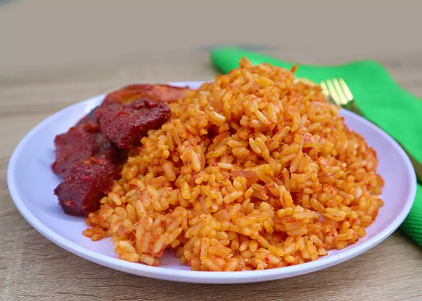

Jollof Rice

description
Jollof rice is a popular nigerian dish made with rice,tomatoes,pepper,onions,and spices.It is delicious and commonly served at parties and family gatherings
ingredients
- Rice
- Tomatoes
- Red pepper
- Onions
- Vegetable oil
- seasoning cube
- Chicken or meat
Steps
- Blend the tomatoes, pepper, and onions.
- Cook the tomato mixture to make the sauce.
- Add seasoning and spices.
- Add rice and cook until it is soft.
- Serve with chicken or your preferred protein.